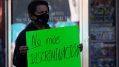
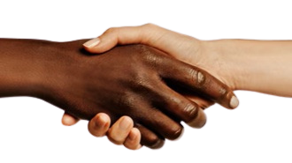

Ultimas noticias

El racismo es la creencia en la existencia de razas superiores e inferiores de seres humanos. Puede formar parte de los prejuicios o convicciones personales de algunas personas o manifestarse en acciones políticas y sociales promovidas por partidos o gobiernos.
La base del racismo es la idea de que la humanidad se divide en razas. Esta idea fue sostenida históricamente por algunas corrientes científicas, pero actualmente es rechazada por la mayoría de los científicos, quienes prefieren hablar de grupos étnicos, pues consideran que los aspectos físicos no marcan diferencias significativas entre las personas (es decir, que no existen diferentes razas humanas) y que son las formas culturales las que realmente diferencian a los grupos humanos. En cualquier caso, el racismo supone una valoración de las razas o grupos étnicos y, por lo tanto, conlleva distintas formas de preferencia, segregación o exclusión basadas en el color de la piel, las facciones de la cara, la identidad étnica o la procedencia cultural
El racismo suele conducir a prácticas discriminatorias, como la otorgación de privilegios (sociales, económicos, legales, políticos) a un grupo étnico sobre otros, la separación, marginación o ataques violentos contra determinadas poblaciones, o la negativa e incluso la prohibición de asociarse con personas provenientes de otras etnias
Este fenómeno es conocido como discriminación racial y forma parte de los delitos y crímenes de odio tipificados en numerosas convenciones internacionales que defienden la igualdad entre las personas.
El racismo tiene una larga historia. Algunos estudiosos identifican sus orígenes en distintas formas de etnocentrismo y xenofobia que existieron desde la Edad Antigua. Otros consideran que es un fenómeno más moderno, vinculado con la clasificación racial del pensamiento científico occidental de los siglos XVIII y XIX

Actualmente, la lucha contra el racismo se da a distintos niveles, tanto locales o comunitarios como estatales e internacionales. Por ejemplo, la Organización de las Naciones Unidas (ONU) manifestó en la Declaración Universal de los Derechos Humanos de 1948 que los derechos humanos corresponden a todas las personas “sin distinción alguna de raza, color, sexo, idioma, religión,
origen nacional o social (…)”, entre otras características. Por otro lado, en 1965 adoptó la Convención Internacional sobre la Eliminación de Todas las Formas de Discriminación Racial, y en 1966 estableció el 21 de marzo como el Día internacional de la Eliminación de la Discriminación Racial.